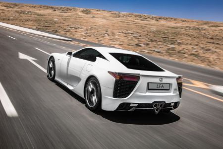
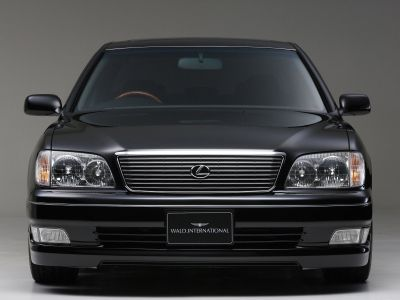
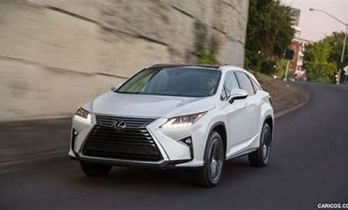

The Best Lexus Cars
These are the top 3 best Lexus cars in no particular order. These picks
involve performance, reliability, and cultural impact.Ever since the release
of the LS400, Lexus has been on a track record of greatness with their
catchphrase being “The relentless pursuit of perfection”. Let's see
what amazing cars Lexus has cooked up while in their pursuit.
Why are these cars so great?
Lets find out!
- LFA

This Lexus LFA line is a beautiful supercar that started in 2010 and
discontinued in 2012. This 4.8L V10 powered supercar wowed everyone at
that time with its sound, engineering, and exclusivity. It has 500 hp
and can go from zero to 60 mph in 3.6 seconds. At the time it was praised
for its advanced carbon fiber construction and its F1 sounding exhaust. Today it’s a
collectors item since only 500 hundred units were produced. It would cost
over $500,000 as of 2025.
- LS 400

The Lexus LS 400 line started in 1990 and has been discontinued since 1994.
This iconic car is what launched the Lexus brand itself. It has a 4.0L V8, a
whisper-quiet cabin, and is very smooth to ride in. This car is known to be
underpriced but also overbuilt and highly reliable. Many 400s have surpassed
300,000 plus miles. This car is considered a masterclass in quality and engineering
and set the tone for what Lexus would become in the future.
- RX 350

Of course I didn’t forget my SUV!
The RX 350. This SUV is actually the most
popular Lexus automobile in the present day. It started in 2006 and is still
ongoing and people often try to imitate it. This SUV went on from 2006 to become
a segment creator. Inventing the luxury crossover since it mixed sedan comfort
with SUV appeal. Not only that, this is a family staple car that is great for road
trips. It hits the sweet spot of not-a-truck but has space. The RX 350 specs include
a V6 engine, AWD (All Wheel Drive), and an amazing interior. It starts at a price
of $50,475 for a FWD (Forward Wheel Drive) and $52,075 for an AWD.